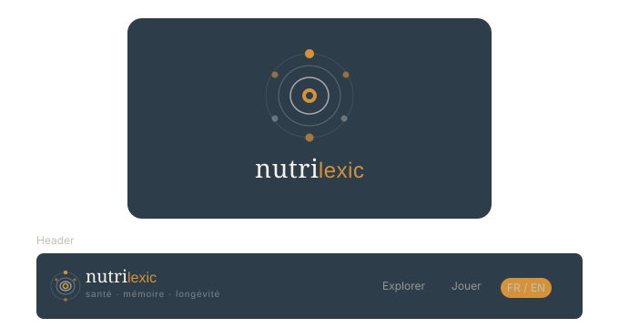

Quand le foie est débordé, la peau prend le relais. Découvrez l'axe foie-peau en médecine fonctionnelle et en médecine chinoise.
4 niveaux progressifs. Vous pourrez poser 3 questions complémentaires en naviguant dans ce chapitre.
Les réponses aux questions que vous poserez sont générées par une IA et s'appuient sur des parutions scientifiques reconnues comme PubMed. Consultez les conditions générales.
Vous trouverez dans le footer un lexique qui vous donnera des informations approfondies sur les termes utilisés. Toutes ces informations sont extraites de parutions scientifiques reconnues.
Les thèmes abordés vont vous apprendre des choses intéressantes mais qui ne se substituent en aucun cas à l'avis d'un professionnel de santé.